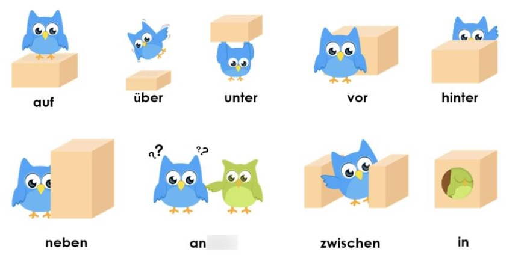

A2+ Kapitel 7：静三动四、关联副词、时间从句与带 zu 的不定式
📍 1. 静三动四 (Wechselpräpositionen) 与方位动词
💡 核心口诀：静三动四。
- wo? (在哪里 - 静态)： 使用 Dativ (第三格)，常搭配不规则动词 (unregelmäßige Verben)。
- wohin? (去哪里 - 动态/方向)： 使用 Akkusativ (第四格)，常搭配规则动词 (regelmäßige Verben)，且必须带第四格宾语 (及物动词)。

九大两用介词 (Wechselpräpositionen): auf, über, unter, vor, hinter, neben, an, zwischen, in。
📍 互动自测：静三动四冠词大闯关
🎮 玩法说明：
1. 点击灰色的 阴影部分 揭晓动词的现在完成时 (Perfekt) 变位。
2. 重点考察“静三动四”：根据左侧的状态 (wo?) 和右侧的动作 (wohin?)，在输入框中填入正确的定冠词或缩合介词 (如 der, die, dem, den, im, ins)！
|
🟡 wo? + Dativ (静三) 阴性der / 阳中性dem |
🟢 wohin? + Akkusativ (动四) 阴性die / 阳性den / 中性das |
|---|---|
|
stehen (立着/站着) ich stehe – stand – habe gestanden
➡️ Ich stehe an Wand.
(die Wand - 阴性) |
stellen (竖放/摆放) ich stelle – stellte – habe gestellt
➡️ Ich stelle den Stuhl an Wand.
(die Wand - 阴性) |
|
liegen (平躺/平放着) es liegt – lag – hat gelegen
➡️ Das Buch liegt auf Tisch.
(der Tisch - 阳性) |
legen (平放/放下) ich lege – legte – habe gelegt
➡️ Ich lege das Buch auf Tisch.
(der Tisch - 阳性) |
|
sitzen (坐着) ich sitze – saß – habe gesessen
➡️ Ich sitze auf Stuhl.
(der Stuhl - 阳性) |
setzen (使...坐下) ich setze (mich) – setzte – habe gesetzt
➡️ Ich setze mich auf Stuhl.
(der Stuhl - 阳性) |
|
hängen (挂着 - 状态) es hängt – hing – hat gehangen
➡️ Die Jacke hängt an Garderobe.
(die Garderobe - 阴性) |
hängen (挂上 - 动作) ich hänge – hängte – habe gehängt
➡️ Ich hänge die Jacke an Garderobe.
(die Garderobe - 阴性) |
|
stecken (插在...里面 - 状态) es steckt – steckte – hat gesteckt
➡️ Der Schlüssel steckt Schloss.
(das Schloss - 中性 / in + dem = im) |
stecken (插进去 - 动作) ich stecke – steckte – habe gesteckt
➡️ Ich stecke den Schlüssel Schloss.
(das Schloss - 中性 / in + das = ins) |
🔗 2. 连词副词：trotzdem 与 deshalb
两者都是副词，在句中必须占位（通常在句首或动词后），用于引导主句。
① trotzdem (尽管如此) - 表转折
表示非预期的结果 (Gegengrund)。
- Ich bin krank, trotzdem gehe ich zur Arbeit.
- Ich bin krank. Ich gehe trotzdem zur Arbeit.
② deshalb (因此/所以) - 表顺承
表示预期的结果 (Grund)。
- Ich bin krank, deshalb gehe ich nicht zur Arbeit.
- Ich bin krank. Ich gehe deshalb nicht zur Arbeit.
⏳ 3. 时间状语从句：als 与 wenn
| 发生频率 | Vergangenheit (过去时) | Gegenwart & Zukunft (现在与将来) |
|---|---|---|
| 一次 (einmal) |
als Als ich ein Kind war... |
wenn Wenn ich älter bin... |
| 多次 (mehrmals) |
(immer) wenn Immer wenn ich in München war... |
(immer) wenn Immer wenn ich in München bin... |
♾️ 4. 带 zu 的不定式 (Infinitiv mit zu)
带 zu 的不定式常跟在特定动词或表达之后，例如：vorhaben, versprechen, bitten, empfehlen, versuchen, Lust/Zeit haben, es ist wichtig/schwer 等。
✅ 何时可使用带 zu 不定式？
-
1. 不定式行为主体与主句的主语一致时：
[原句] Paula kann die Prüfung bestehen. Das hofft Paula.
➡️ Paula hofft, die Prüfung bestehen zu können. (不定式作宾语) -
2. 不一致，但与主句的第三格或第四格宾语一致时：
[原句] Die Eltern sollen für sie einen Computer kaufen. Darum bittet Paula die Eltern.
➡️ Paula bittet die Eltern, für sie einen Computer zu kaufen. (不定式作宾语) -
3. es ist + Adj. / Partizip (不定式作主语)：
• 如果不定式行为主体是“大家”（普遍性的），在不定式中可被省略：
[原句] Alle Studierenden müssen die Prüfung bestehen. Es ist für alle Studierenden wichtig.
➡️ Es ist wichtig, die Prüfung zu bestehen.
或 Die Prüfung zu bestehen, ist wichtig.
• 否则，不定式行为主体以 第三格 (Dativ) 或 für + 第四格 (Akkusativ) 形式出现在主句中：
➡️ Es ist mir wichtig, ... / Es ist für mich wichtig, ...
✍️ 随堂自测：请填入正确的带 zu 不定式形式 (注意可分动词哦！)
- 1. (bestehen) Paula hofft, die Prüfung . (考察：主语一致)
- 2. (anrufen) Ich habe versucht, dich . (考察：可分动词 zu 放在中间)
- 3. (kaufen) Paula bittet die Eltern, einen Computer . (考察：宾语一致)
- 4. (lernen) Es ist wichtig, jeden Tag Deutsch . (考察：es ist 句型)
- 5. (sein) Es ist mir wichtig, immer pünktlich . (考察：es ist + Dativ)
💬 A2-K7 交际与核心词汇 (Wohnen, Hausarbeit, Ernährung & Restaurant)
🗂️ 1. 居住理想与餐厅交际 —— 点击卡片翻转记忆
🗣️ 2. 核心词汇搭配测试 (Hausarbeit & Gesunde Ernährung)
点击阴影处查看正确的动词搭配。
- 🧹日常家务 Staub saugen (吸尘) / das Geschirr spülen (洗碗) / Wäsche waschen (洗衣服)
- 👷 大型劳作 die Wände neu streichen (重新粉刷墙壁) / das Wohnzimmer tapezieren (给客厅贴壁纸) / den Garten in Ordnung bringen (整理花园)
- 🥗 健康饮食 das Immunsystem stärken (增强免疫力) / die Leistungsfähigkeit steigern (提高工作效率)
- 🧑🍳 烹饪步骤 Gemüse waschen und schneiden (洗菜和切菜) / mit Salz und Zucker würzen (用盐和糖调味) / mit Sahne verfeinern (加入奶油提鲜)
🔑 3. 核心动词变位大汇总与自测 (Verben)
① 不规则动词 (Unregelmäßige Verben)
| 原形 (Infinitiv) | 现在时 (Präsens) er | 过去时 (Präteritum) er | 现在完成时 (Perfekt) er |
|---|---|---|---|
| abwaschen (洗碗/洗掉) | wäscht ab | wusch ab | hat abgewaschen |
| beitreten (加入/参加) | tritt bei | trat bei | ist beigetreten |
| schneiden (切/剪) | schneidet | schnitt | hat geschnitten |
| streichen (粉刷/涂抹) | streicht | strich | hat gestrichen |
| versprechen (答应/承诺) | verspricht | versprach | hat versprochen |
| waschen (洗) | wäscht | wusch | hat gewaschen |
② 规则动词 (Regelmäßige Verben)
| 原形 (Infinitiv) | 现在时 (Präsens) er | 过去时 (Präteritum) er | 现在完成时 (Perfekt) er |
|---|---|---|---|
| aufräumen (整理/收拾) | räumt auf | räumte auf | hat aufgeräumt |
| bügeln (熨烫) | bügelt | bügelte | hat gebügelt |
| erholen (sich) (休养) | erholt sich | erholte sich | hat sich erholt |
| ernähren (sich) (饮食) | ernährt sich | ernährte sich | hat sich ernährt |
| tapezieren (贴壁纸) | tapeziert | tapezierte | hat tapeziert |
| zubereiten (准备食物) | bereitet zu | bereitete zu | hat zubereitet |
✍️ 随堂自测大闯关：请根据句意填写正确的现在完成时 (Perfekt) 形式
- 1. (abwaschen) Ich das Geschirr . (我洗了碗 - 留意可分前缀)
- 2. (beitreten) Sie einem Sportverein . (她加入了一个体育俱乐部 - 留意助动词！)
- 3. (schneiden) Er das Gemüse . (他切了蔬菜)
- 4. (aufräumen) Wir das Zimmer . (我们整理了房间)
- 5. (versprechen) Du es mir ! (你向我保证过的！- 不可分前缀无ge-)
- 6. (sich erholen) Ich mich im Urlaub sehr gut . (我在假期里休息得很好)